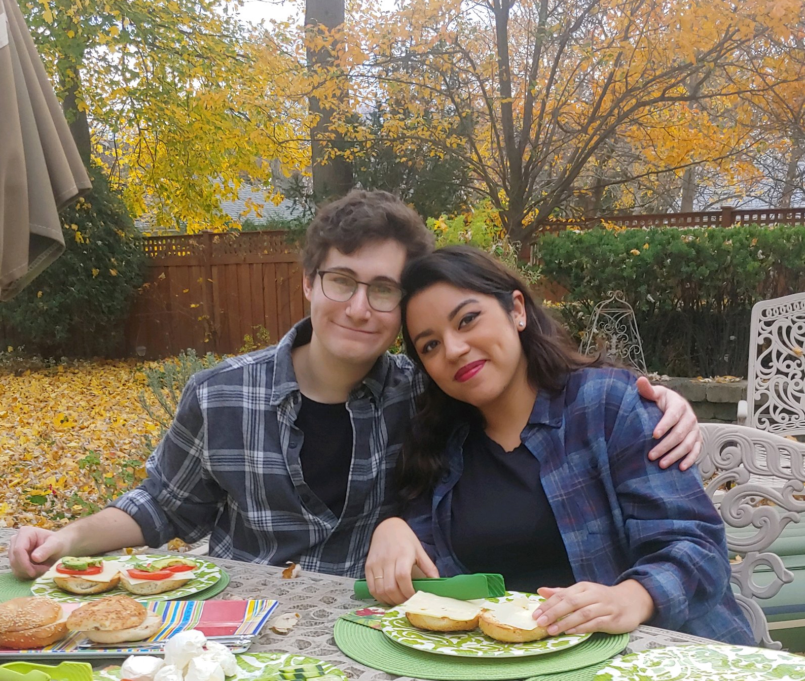
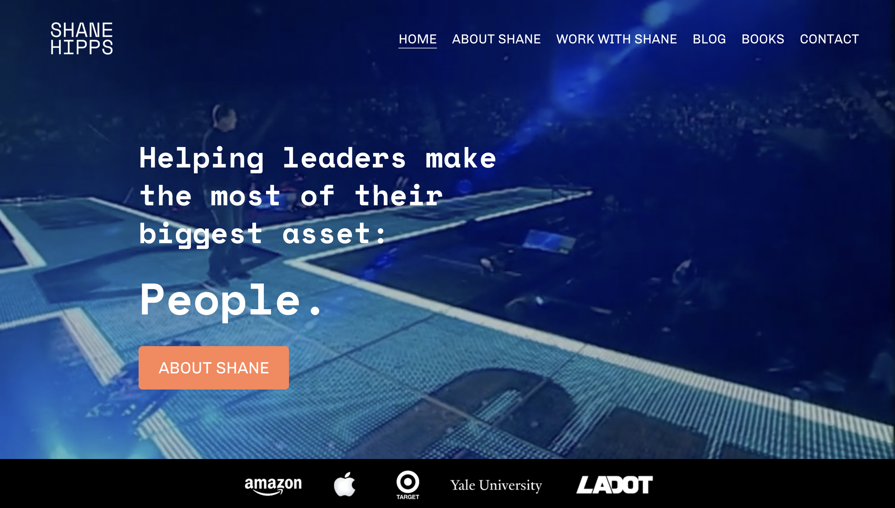
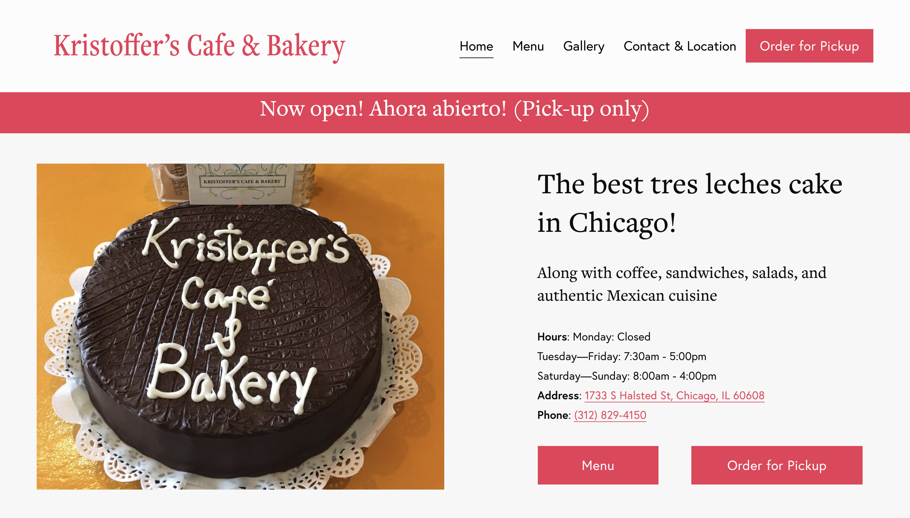
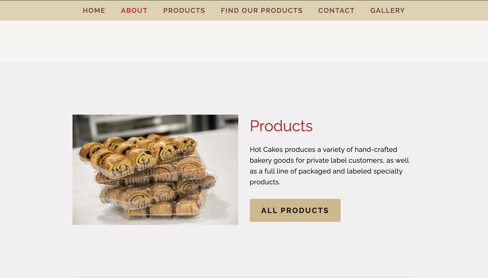
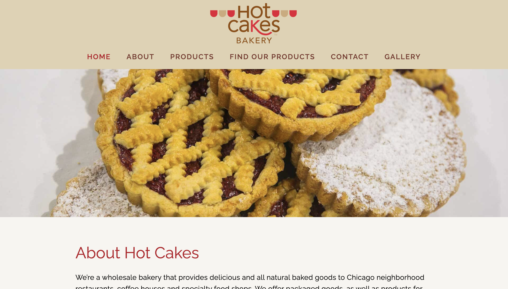
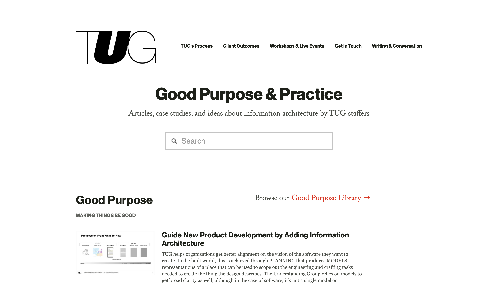
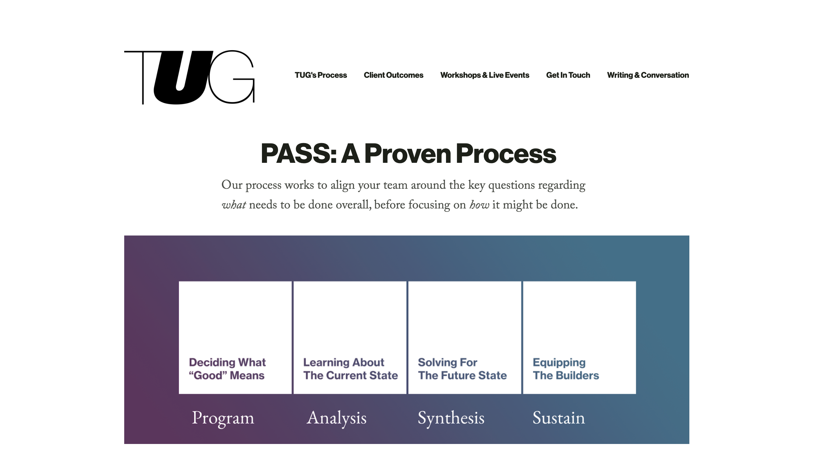
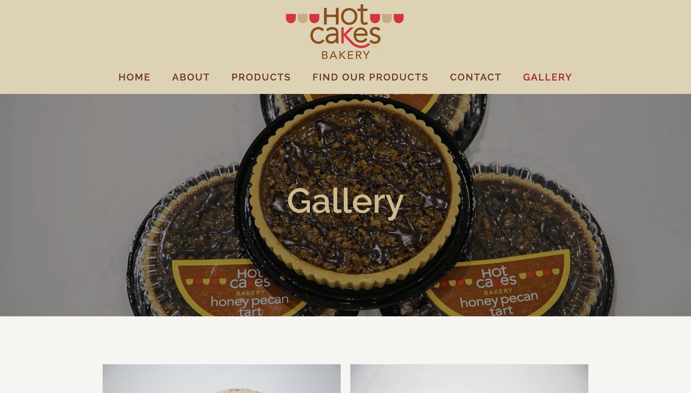
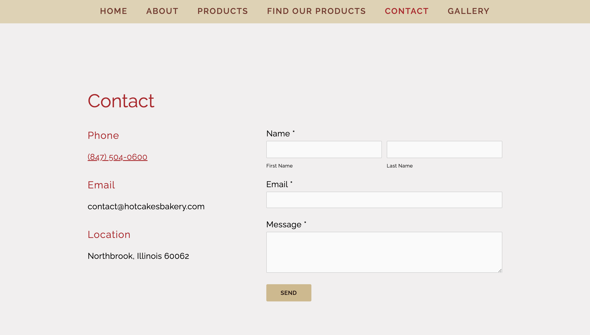
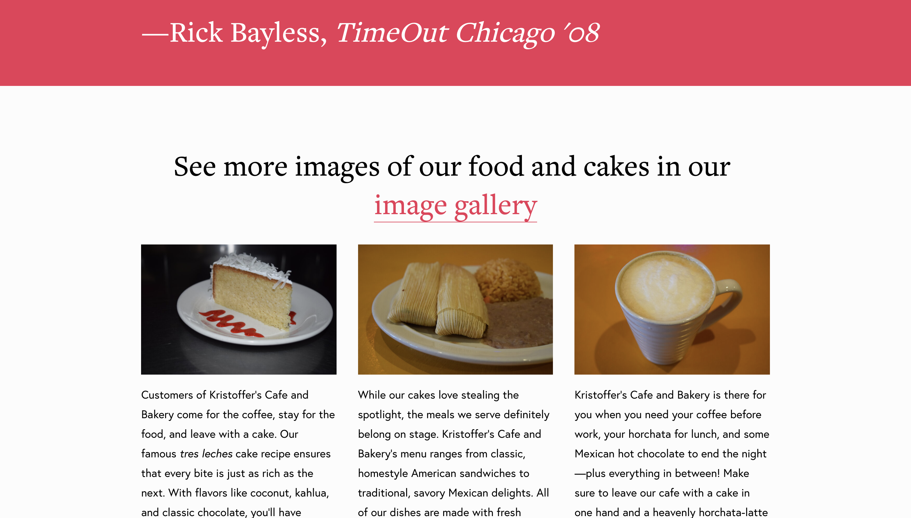

About
Hi, I'm David. I work as a user experience designer at Redmane Technology. I think of my work as making places made of information, digital places. I've been in the business since 2017, and in 2020 I got my MS in Information at UMSI, specializing in UX research and design.
Work Gallery
Please feel free to see some images of my work below.








